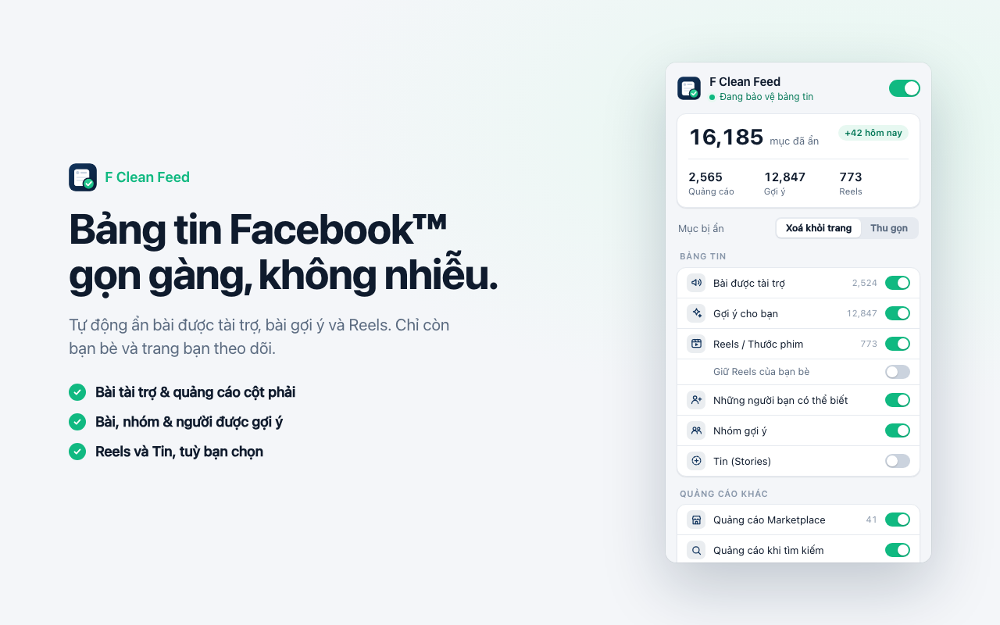
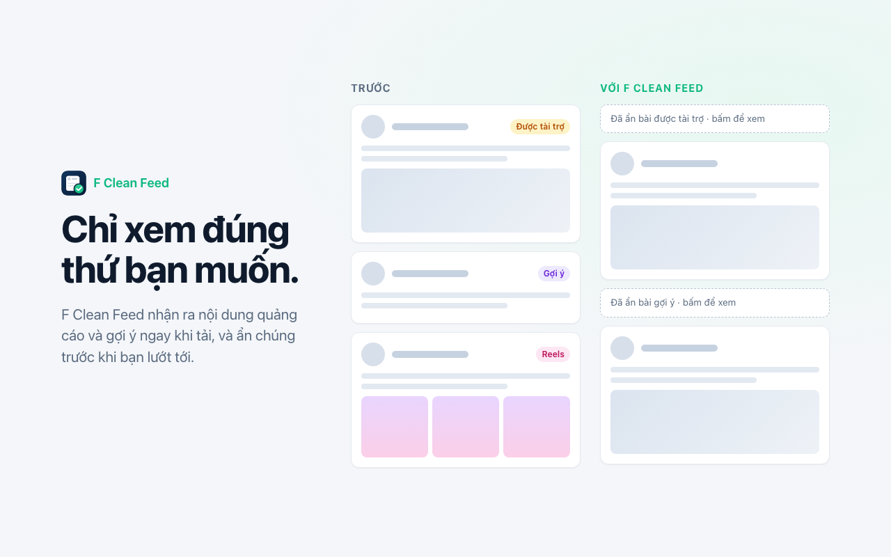
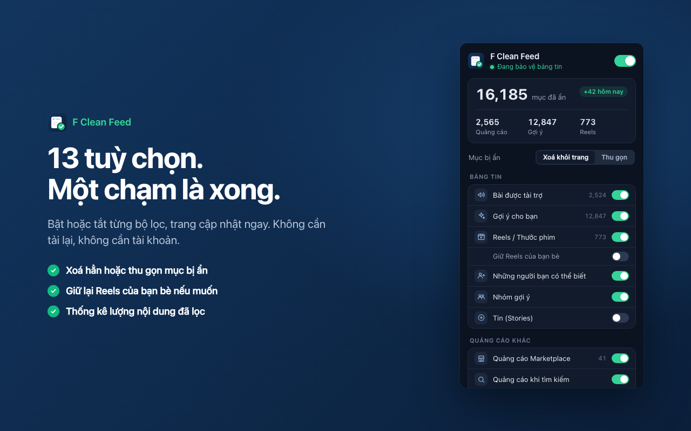

F Clean Feed tự động ẩn bài được tài trợ, bài gợi ý, Reels và Tin. Chỉ còn bạn bè và những trang bạn thực sự theo dõi.
Dành cho Google Chrome và các trình duyệt Chromium (Edge, Brave, Cốc Cốc).

14 tuỳ chọn, mỗi tuỳ chọn một công tắc. Có hiệu lực ngay, không cần tải lại trang.
Bài được tài trợ trong bảng tin, quảng cáo cột phải, Marketplace và kết quả tìm kiếm.
Bỏ khay Reels và thanh Tin. Muốn thì vẫn giữ Reels do bạn bè chia sẻ.
"Gợi ý cho bạn", "Những người bạn có thể biết" và nhóm gợi ý.
Bài được nhận diện ngay khi tải, trước khi trình duyệt kịp vẽ lên màn hình.
Ẩn hai cột bên ở trang chủ để bảng tin nằm giữa, dễ tập trung hơn.
Không máy chủ, không analytics, không mã bên thứ ba. Chỉ chạy trên facebook.com.


Trong lúc chờ Chrome Web Store duyệt, bạn có thể cài thủ công trong một phút:
chrome://extensions và bật Developer mode (góc trên bên phải).Có. Tiện ích hoàn toàn miễn phí, không có gói trả phí và không cần tạo tài khoản.
Không. Mọi xử lý diễn ra ngay trong trình duyệt. Tiện ích không có máy chủ, không dùng analytics, chỉ lưu cài đặt và số liệu thống kê trên máy bạn.
Google Chrome và các trình duyệt nhân Chromium như Microsoft Edge, Brave, Cốc Cốc.
Được. Bật mục “Reels / Thước phim” và bật thêm “Giữ Reels của bạn bè” trong popup của tiện ích.
Facebook thay đổi giao diện khá thường xuyên. Hãy cài bản mới nhất ở trang Releases, hoặc báo lỗi tại GitHub Issues để được sửa sớm.
Có một thẻ nhỏ giới thiệu MMO VPS của tác giả ở cột phải trang chủ Facebook, ghi rõ nhãn “Quảng cáo”. Bạn có thể bấm × để ẩn 7 ngày hoặc tắt hẳn trong popup.